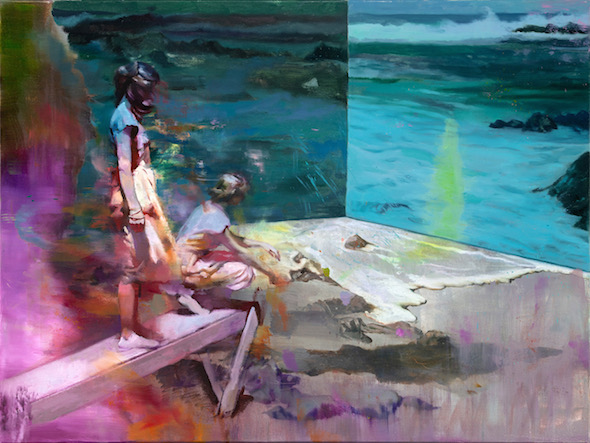
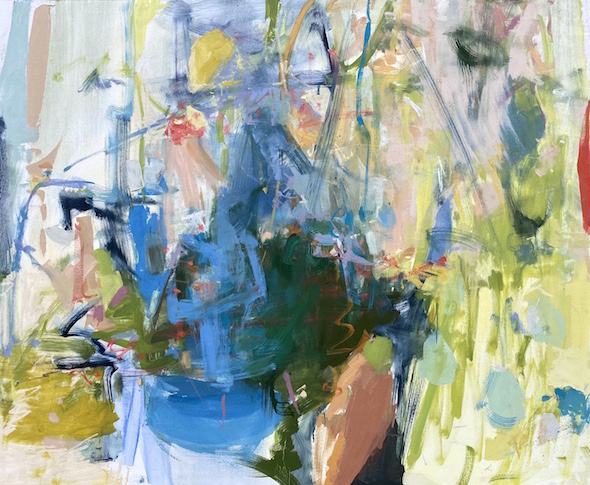
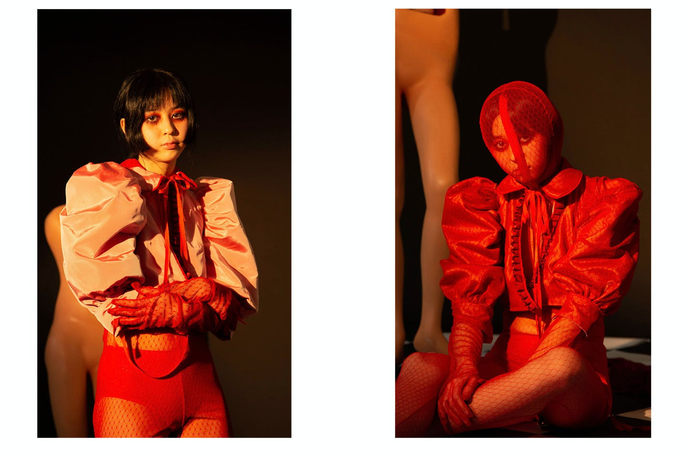
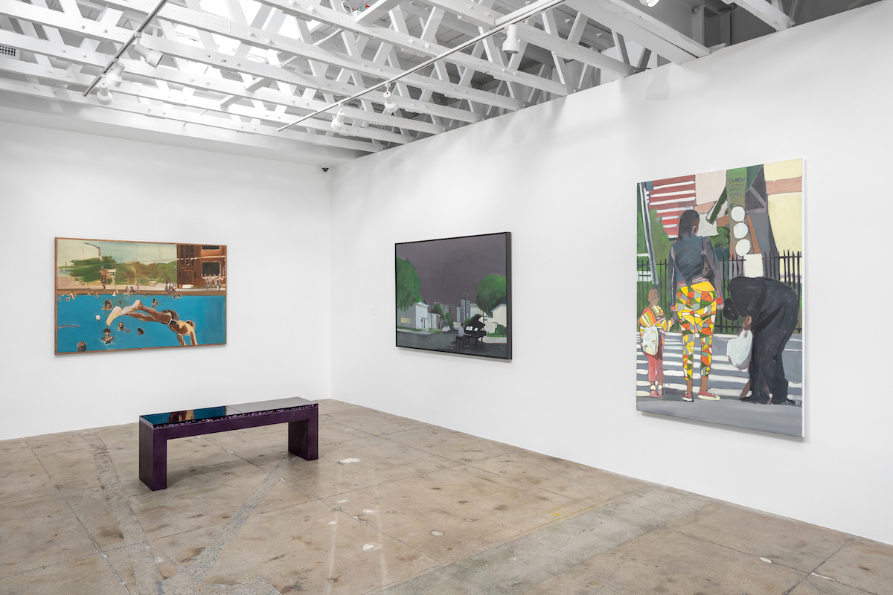
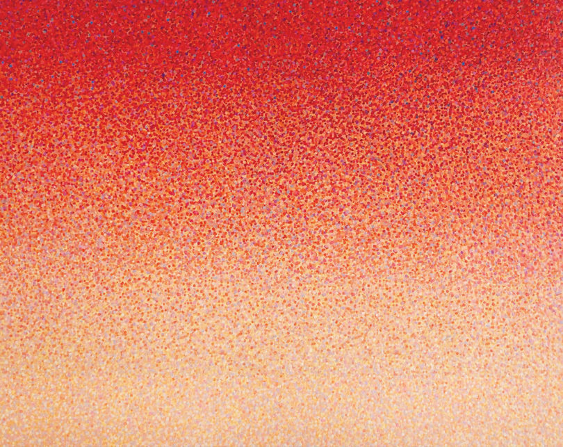

FEATURED EVENTS
A Field Guide to Getting Lost
March 6 - 27, 2020

Why is the Sky Blue?
March 6 - 27, 2020


ARTIST OF THE WEEK - Veronica Lee
Dressing Body, Undressing Humanity is a deconstruction of human nature through the process of dress. This thesis employs the symbolic decaying nature of the human body as a metaphor for the decline of mortality as a means of exploring people's capacity for depravity. Throughout history and in our daily lives, we see human beings commit atrocious acts, from the overconsumption of resources to the abuse of others to the massive scale of destruction in warfare to our individual offenses against one another.

Directors of L.A.’s Underground Museum Depart as Noah Davis Show Shutters Early
BY MATT STROMBERG
March 15, 2022 3:48pm
Directors of L.A.’s Underground Museum Depart as Noah Davis Show Shutters Early
BY MATT STROMBERG
March 15, 2022 3:48pm
Directors of L.A.’s Underground Museum Depart as Noah Davis Show Shutters Early
BY MATT STROMBERG
March 15, 2022 3:48pm
MUST SEE

NETWERK AALST
Houtkaai 15, www.netwerkaalst.be
Thu - Sun 1pm to 6pm
Didem Pekün, susan pui san lok / susan lok pui san, Wendelien van Oldenborgh
Rewinding Internationalism
February 19 - May 1, 2022
Curated by Nick Aikens, "Rewinding Internationalism" is conceived as a score across installation, sound, film, archival presentations, and live rehearsals.